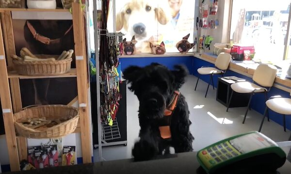

Lisboa · Praça São João Bosco
Cuidados veterinários para o seu animal, em três unidades de Lisboa
Vacinação, diagnóstico e especialidades na Clínica Veterinária S. João Bosco e nos consultórios de Santos e do Carmo, com urgências abertas 24 horas.
Segunda a sexta das 10:00 às 20:00 · Urgências 24 horas: 968 774 234
O que fazemos pelo seu animal
Da consulta de rotina à urgência, tudo no mesmo grupo de clínicas.
Cuidados veterinários e vacinação
Consultas e plano de vacinas para acompanhar a saúde do seu animal.
Meios complementares de diagnóstico
Exames de apoio para chegar a um diagnóstico com segurança.
Especialidades
Equipa médica com áreas de especialidade para os casos que pedem mais.
Urgências 24 horas
Atendimento a qualquer hora. Ligue para 968 774 234.
Uma equipa que conhece o seu animal pelo nome
Médicos veterinários e espaço próprio na Praça São João Bosco.

Quando o seu animal precisa de ajuda, há sempre uma equipa de Lisboa pronta a atender.
Três unidades, uma só equipa
Clínica Veterinária S. João Bosco
Praça São João Bosco, 17, Lisboa.
Consultório Veterinário de Santos
Lisboa.
Consultório Veterinário do Carmo
Lisboa.
Perguntas frequentes
Qual é o horário?
De segunda a sexta das 10:00 às 20:00. Ao sábado das 10:30 às 13:00 e das 14:00 às 18:00. Ao domingo estamos fechados, mas as urgências funcionam 24 horas.
Têm urgências ao fim de semana?
Sim, as urgências estão abertas 24 horas. Ligue para 968 774 234.
Como marco uma consulta?
Ligue para 213 941 414 ou escreva para geral@animalgest.pt.
Onde fica a clínica?
Na Praça São João Bosco, 17, em Lisboa. Use o botão Como chegar na secção de contacto.
Fale com a Animalgest
Ligue e marque a consulta do seu animal.
- Telefone: 213 941 414
- Urgências 24 horas: 968 774 234
- Correio eletrónico: geral@animalgest.pt
- Morada: Praça São João Bosco, 17, Lisboa
- Horário: segunda a sexta 10:00 às 20:00; sábado 10:30 às 13:00 e 14:00 às 18:00; domingo fechado